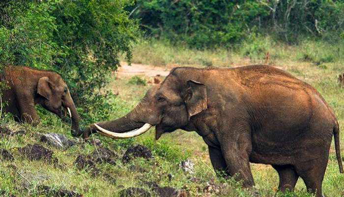

Thiruvananthapuram is the capital of the Indian state of Kerala. Thiruvananthapuram is a major tourist hub in India. Kovalam and Varkala are popular beach towns near the city. Other important beaches include Poovar, Shankumugham Beach, Azhimala Beach, Vizhinjam Beach and Veli Beach. The Padmanabhaswamy Temple located at the heart of the city is known as the richest place of worship in the world. Other places of interest include Agasthyamala rain forests, Neyyar Wildlife Sanctuary, Kallar, Braemore, Ponmudi hills, Poovar, Anchuthengu backwaters, Varkala Cliffs and Kappil-Edava lakes. The city is also known for its unique style of architecture involving Kerala Architecture with British and Dravidian influences. Napier museum, Zoo, Padmanabha Swamy temple, Kuthira Malika palace, Kilimanoor palace and The Trivandrum Golf Club heritage building are examples for this. The main museums include Kerala Science and Technology Museum, Napier Museum, Kerala Soil Museum and Koyikkal Palace Museum. Agasthyamala Biosphere Reserve is listed in UNESCO's World Network of Biosphere Reserves.
The famous temple is a fine example of fusion of Keralite and Dravidian cultures. With intricate stonework and breathtaking backdrop, this place attracts a huge number of tourists. The stunning architecture and the tranquility encircling the atmosphere of this destination makes it one of the most gorgeous tourist attractions in Thiruvananthapuram.
There can be nothing more peaceful and satisfying than enjoying nature in its true form. Home to various endangered species, a visit to Neyyar wildlife sanctuary is a must for wildlife lovers. Situated 35 km north of Trivandrum, it can be reached by KSRTC bus or private taxi. The sanctuary also organises Lion Safaris, which just can’t be missed. With the availability of various lodging options and the place also offers an opportunity for two day treks.
What better way to meet the sheer genius behind the incredible bronze sculptures, ornaments, and the like than in a museum of the amalgamated architecture of Mughal and Malabar influence than that of Raja Ravi Varma? Admire masterpieces by a man who literally crafted our imagination; it was his art that inspired appearances of characters in the infamous Amar Chitra Katha.
An island of mangroves and stunning beaches, Poovar is a 30km drive from Trivandrum city. Bob across serene waters, parting clumps of hyacinths on the way while you lap up the beauty in simplicity here as huts and people turn into silhouettes with the setting sun.